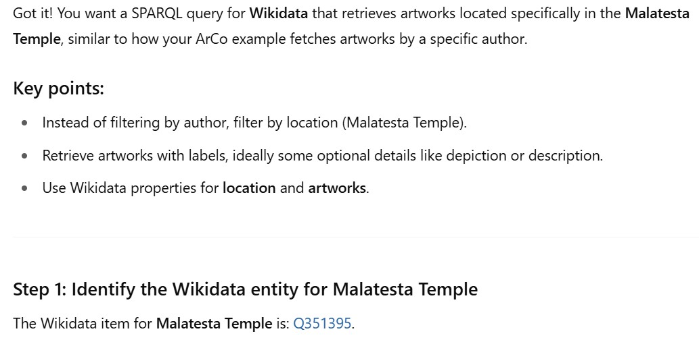

Tempio Malatestiano (ID Wikidata: Q1268593)
Investigated by Francesca Zanellato
🏛 Why the Malatesta Temple?
The Malatesta Temple in Rimini was originally built in the 13th century. Its renovation was later commissioned in the 15th century by Sigismondo Pandolfo Malatesta, the city's lord, who entrusted architect Leon Battista Alberti with the redesign. The temple combines Gothic and classical elements and features important artworks by Piero della Francesca, Giotto, and Agostino di Duccio. It also serves as the mausoleum for the Malatesta family, symbolizing their power and legacy. Located in the heart of Rimini, the temple is a key cultural landmark showcasing the city's rich history and artistic heritage.
Keeping the Malatesta Temple's Wikidata entry accurate and complete is essential to ensure that reliable information is available across platforms. As one of Rimini's most significant historical and cultural sites, it deserves proper digital representation to support both cultural preservation and global visibility.
🔍 SPARQL queries to detect the gaps
DESCRIBE Query
To begin with, I used the DESCRIBE function to examine the properties and objects related to the Malatesta Temple. This helped me assess how thoroughly it is already described and identify any missing information.
PREFIX wd: <http://www.wikidata.org/entity/>
PREFIX rdfs: <http://www.w3.org/2000/01/rdf-schema#>
PREFIX bd: <http://www.bigdata.com/rdf#>
PREFIX wikibase: <http://wikiba.se/ontology#>
DESCRIBE wd:Q1268593
WHERE {
SERVICE wikibase:label { bd:serviceParam wikibase:language "it,en". }
}
LIMIT 100
By doing so, I realize that the Malatesta Temple is already extensively described in Wikidata, but some important properties may still be missing.
The most frequently occurring ones relate to: place of burial, names and variants, such as native labels or alternative names, artistic associations or affiliations with artworks and cultural topics.
However, additional relevant properties, beyond the missing ones already identified in the previous general query, could be added or further specified to enrich the Wikidata entry for the temple.
These include its current use, significant historical events associated with it, and the components that constitute the temple, such as artworks and architectural features.
SELECT Query
Therefore, I proceed with a SELECT query, employing the OPTIONAL clause to investigate potentially missing or incomplete properties in the knowledge graph. Specifically, I included the temple's current use, significant historical events associated with it, and its components, such as artworks and architectural features, alongside previously identified properties that required correction or enhancement.
PREFIX wd: <http://www.wikidata.org/entity/>
PREFIX wdt: <http://www.wikidata.org/prop/direct/>
PREFIX rdfs: <http://www.w3.org/2000/01/rdf-schema#>
SELECT DISTINCT ?monuments ?monument_name
?material ?use ?event (YEAR(?eventDate) AS ?event_year) ?part
WHERE {
VALUES ?monuments
{ wd:Q1268593 } #Tempio Malatestiano
?monuments rdfs:label ?monument_name .
FILTER(LANG(?monument_name) = "it")
OPTIONAL { ?monuments wdt:P186 ?materialentity. } # Material
OPTIONAL { ?monuments wdt:P366 ?use_entity. } # Use
OPTIONAL {
?monuments p:P793 ?eventStatement.
?eventStatement ps:P793 ?event_entity.
OPTIONAL { ?eventStatement pq:P585 ?eventDate. } # Significant event
}
OPTIONAL { ?monuments wdt:P527 ?part_entity. } # Has part
SERVICE wikibase:label {
bd:serviceParam wikibase:language "en,it" .
?material_entity rdfs:label ?material .
?use_entity rdfs:label ?use .
?event_entity rdfs:label ?event .
?part_entity rdfs:label ?part .
}
}
ORDER BY ?event_year ?part
From the results, I realize that there are several properties that should be specified in order to make the Wikidata entry for the Malatesta Temple complete and accurate.
🤖 Use of LLMs to enrich the knowledge graph
I asked Chat GPT and Gemini to help me with the missing information and compared their outcomes.
Zero-shot prompt
The first question was a zero shot prompt:
"Hi! I'm looking for missing information to complete the Wikidata page of the Tempio Malatestiano in Rimini. The missing details are: the material it is made of and its use. Could you help me? "
Chat GPT's answer
ChatGPT provides a very concise and minimally detailed response.
Gemini's answer
Gemini provides a more complete and thorough response.
It is now clear that the temple serves multiple purposes: it is at once a place of worship, a mausoleum, and a tourist attraction.
What remains somewhat unclear is the predominant material used in its construction. I therefore ask the chatbot for clarification.
Among the materials mentioned, which one most accurately defines the monument?
Gemini's answer
Some researches on reliable sources confirmed that the material is 'pietra d'Istria' and that the temple serves multiple uses
Sources: Website of Rimini Turism; Arte, Opere, Artisti. Per la scuola secondaria di secondo grado.
→ N.B. It is essential to verify information coming from LLMs.
For the remaining missing information, I decided to follow a different approach. This is because I was already aware of certain facts about the temple thanks to my previous research, and I specifically chose to query these properties to check whether they were also present in Wikidata. For example, from my preliminary research, particularly on the official Wikipedia page, I already knew that the temple had suffered significant damage during World War II. As for the artworks housed inside the temple, I first discovered them during my initial DESCRIBE query. In that data, several works by renowned artists were listed as being located in the Tempio Malatestiano. However, in those triples, the temple appeared only as the object, indicating the location of the artworks, not the subject. As a result, these connections do not show up directly on the Temple's Wikidata page. The goal is making this relationship explicit by linking the artworks to the temple using the property 'has part', so they are clearly recognized as integral elements of the site.
I ask LLMs to help me retrieve all the artworks that are located in the Malatesta Temple.
One-shot prompt
"Hi! I'm looking to retrieve all the artworks located in the Malatesta Temple from Wikidata. Could you help me write a SPARQL query for that?
For reference, here's an example of a similar query in ArCo knowledge graph,
the main difference is that I am interested in artworks connected to a specific location rather than to a specific author.
PREFIX rdf: <http://www.w3.org/1999/02/22-rdf-syntax-ns#>
PREFIX arco: <https://w3id.org/arco/ontology/arco/>
PREFIX a-cd: <https://w3id.org/arco/ontology/context-description/>
PREFIX agent: <https://w3id.org/arco/resource/Agent/>
PREFIX rdfs: <http://www.w3.org/2000/01/rdf-schema#>
SELECT *
WHERE {
?culturalProperty a arco:HistoricOrArtisticProperty;
a-cd:hasAuthor agent:50f36ef3d01e9761a295106ebbd39de3;
cis:involvesCulturalEntity ?culturalEntity .
rdfs:label ?label
OPTIONAL { ?culturalProperty a-cd:depiction ?depiction }
}
Chat GPT's answer


SELECT ?artwork ?artworkLabel WHERE {
?artwork wdt:P31/wdt:P279* wd:Q838948 .
VALUES ?location { wd:Q351395 } { wd:Q1268593 }
{
?artwork wdt:P276 ?location .
}
UNION
{
?artwork wdt:P131 ?location .
}
SERVICE wikibase:label { bd:serviceParam wikibase:language "[AUTO_LANGUAGE],en". }
}
ChatGPT initially suggested an incorrect Wikidata ID for the Tempio Malatestiano (Q1268593). The query is concise yet effective, particularly due to the use of the UNION operator between the two properties, which increases the chances of retrieving relevant results. After manually correcting the ID, the query results became satisfactory and complete.
Gemini's answer
PREFIX wd: <http://www.wikidata.org/entity/>
PREFIX wdt: <http://www.wikidata.org/prop/direct/>
PREFIX rdfs: <http://www.w3.org/2000/01/rdf-schema#>
PREFIX schema: <http://schema.org/>
SELECT DISTINCT ?artwork ?artworkLabel ?instanceOfLabel ?depiction
WHERE {
# Malatesta Temple (Q1268593)
BIND(wd:Q1268593 AS ?malatestaTemple)
# Find items located at the Malatesta Temple
?artwork wdt:P276 ?malatestaTemple .
# Filter for instances of art forms (painting, sculpture, fresco, etc.)
# P31: instance of
# P279: subclass of
?artwork wdt:P31/wdt:P279* ?instanceOf .
VALUES ?instanceOf {
wd:Q3305213 # painting
wd:Q860861 # sculpture
wd:Q125191 # fresco photography
wd:Q17537576 # artwork
wd:Q24300306 wd:Q93184 # drawing (art)
wd:Q188981 wd:Q11060274 # print (art)
wd:Q21527712 wd:Q101687 # altarpiece
}
# Get the label for the artwork and its instance type in English
SERVICE wikibase:label {
bd:serviceParam wikibase:language "[AUTO_LANGUAGE],en".
?artwork rdfs:label ?artworkLabel .
?instanceOf rdfs:label ?instanceOfLabel .
}
# Optional: get an image depiction of the artwork
OPTIONAL { ?artwork wdt:P18 ?depiction . }
}
ORDER BY ?artworkLabel
Gemini provides a more detailed explanation and a broader query. However, some values are incorrect. For example: wd:Q125191 refers to photography, not fresco; wd:Q24300306, intended to represent drawing (art), actually corresponds to a protein, the correct ID for drawing is wd:Q93184; wd:Q188981 was used for print (art), but the appropriate ID is wd:Q11060274; and while wd:Q21527712 was used for altarpiece, the accurate value should be wd:Q101687. Once these values are corrected, the results are equivalent to those returned by the query proposed by ChatGPT. I also added DISTINCT after SELECT in order to avoid duplicates. However, some results still appear multiple times because the same artwork is to several different 'InstanceOf' labels. Aside from these duplicates, the output remains consistent.
With all the missing information now collected, I am ready to proceed with the construction of the new triples.
Zero-shot chain-of-thought prompt
I ask ChatGPT and Gemini to help me generate a CONSTRUCT query through a zero-shot chain-of-thought prompt in which I explicitly provided all the missing information I had retrieved in the previous steps.
"Hi, I need to enrich the entity wd:Q1268593 (Tempio Malatestiano) in the Wikidata knowledge graph with some new triples. I noticed that in the page various things are missing such as:
- the material, which is Pietra d'Istria (Q1401767);
- the use, which is structure of worship (Q1370598), mausoleum (Q162875)), tourist attraction (Q570116);
- the artworks that are part of the temple such as: Crocifisso di Rimini (Q3005517), Monumento funebre di Sigismondo Pandolfo Malatesta (Q117745501), Sigismondo Pandolfo Malatesta in preghiera davanti a san Sigismondo (Q3960322) ;
- the significant event, which corresponds to a property damage (Q554774) occurred during WW2, in particular in 1944 .
Can you create a CONSTRUCT query for Wikidata with all this information? Let's think STEP-BY-STEP!"
Chat GPT's answer
CONSTRUCT {
wd:Q1268593 wdt:P186 wd:Q1401767 ; # material: Pietra d'Istria
wdt:P366 wd:Q1370598 , wd:Q162875 , wd:Q570116 ; # use
wdt:P527 wd:Q3005517 , wd:Q117745501 , wd:Q3960322 ; # artworks
wdt:P793 wd:Q554774 . # significant event: property damage
wd:Q554774 wdt:P585 "1944-01-01T00:00:00Z"^^xsd:dateTime . # point in time of the damage
}
WHERE {
BIND(wd:Q1268593 AS ?temple)
# Material
BIND(wd:Q1401767 AS ?material)
# Use
BIND(wd:Q1370598 AS ?worship)
BIND(wd:Q162875 AS ?mausoleum)
BIND(wd:Q570116 AS ?tourist)
# Artworks
BIND(wd:Q3005517 AS ?art1)
BIND(wd:Q117745501 AS ?art2)
BIND(wd:Q3960322 AS ?art3)
# Event
BIND(wd:Q554774 AS ?event)
}
ChatGPT's response is clear and complete. This query uses direct properties (wdt:) in order to add simple triples. In the WHERE clause it binds constants. The event property uses wdt:P793 with a simple triple, but the time qualifier is given separately for the event entity. Running the query produces all the new triples we want to create, neatly organized in subject-predicate-object order, with all the data accurate and correctly formatted.
Gemini's answer
PREFIX wd: <http://www.wikidata.org/entity/>
PREFIX p: <http://www.wikidata.org/prop/>
PREFIX ps: <http://www.wikidata.org/prop/statement/>
PREFIX pq: <http://www.wikidata.org/prop/qualifier/>
PREFIX xsd: <http://www.w3.org/2001/XMLSchema#>
CONSTRUCT {
wd:Q1268593 p:P186 wd:Q1401767 .
wd:Q1268593 p:P366 wd:Q1370598 .
wd:Q1268593 p:P366 wd:Q162875 .
wd:Q1268593 p:P366 wd:Q570116 .
wd:Q1268593 p:P4639 p:P527 wd:Q3005517 .
wd:Q1268593 p:P4639 p:P527 wd:Q117745501 .
wd:Q1268593 p:P4639 p:P527 wd:Q3960322 .
wd:Q1268593 p:P793 [
ps:P793 wd:Q554774 ;
pq:P585 "1944-00-00T00:00:00Z"^^xsd:dateTime ;
] .
} WHERE {
# This WHERE clause is minimal for a CONSTRUCT query that just adds new triples.
# It ensures the query runs, but doesn't filter existing data.
# In a real-world scenario, you might add a WHERE clause to check for the existence
# of the entity or other conditions.
VALUES (?entity) { (wd:Q1268593) }
}
Gemini provides a complete CONSTRUCT query, although it is somewhat more repetitive in the query body compared to the one proposed by ChatGPT. However, for the WHERE clause, Gemini uses a minimal pattern since it focuses on constructing new triples, unlike ChatGPT's query, which has a more extensive WHERE clause. The properties are stated using property statements (p:). For the significant event P793, the event is modeled as a blank node with the statement (ps:P793 wd:Q554774) and a qualifier pq:P585 for the time. This leads to a more detailed modeling of qualifiers on statements. However, the query from Gemini contains an incorrect property ID for 'has part' (P527); it mistakenly uses P4639. After correcting this, the results become satisfactory.
✅ Correct CONSTRUCT query and triples
In conclusion, LLMs can be a great help in identifying gaps and missing information. However, it is ALWAYS necessary to verify the information given by chatbots.
In fact, it has emerged that they often confuse Wikidata IDs, which can lead to incorrect queries.
Nevertheless, they provide a solid starting point for the work and valuable support in the research process.
Here is the final CONSTRUCT query:
PREFIX wd: <http://www.wikidata.org/entity/>
PREFIX wdt: <http://www.wikidata.org/prop/direct/>
PREFIX p: <http://www.wikidata.org/prop/>
PREFIX ps: <http://www.wikidata.org/prop/statement/>
PREFIX pq: <http://www.wikidata.org/prop/qualifier/>
PREFIX xsd: <http://www.w3.org/2001/XMLSchema#>
CONSTRUCT {
# Material
wd:Q1268593 wdt:P186 wd:Q1401767 . # pietra d'Istria
# Uses
wd:Q1268593 wdt:P366 wd:Q1370598 . # place of worship
wd:Q1268593 wdt:P366 wd:Q162875 . # mausoleum
wd:Q1268593 wdt:P366 wd:Q570116 . # tourist attraction
# Artworks > part of the Temple
wd:Q1268593 wdt:P527 wd:Q3005517 . # artwork 1 (Crocifisso di Rimini)
wd:Q1268593 wdt:P527 wd:Q117745501 . # artwork 2 (Monumento funebre di Sigismondo Pandolfo Malatesta)
wd:Q1268593 wdt:P527 wd:Q3960322 . # artwork 3 (Sigismondo Malatesta in preghiera davanti a San Sigismondo)
# Significant event on temple
wd:Q1268593 wdt:P793 wd:Q554774 . # event: damage
#Date of the event
wd:Q554774 wdt:P585 "1944-01-01T00:00:00Z"^^xsd:dateTime
}
WHERE {
VALUES (?temple ?material ?worship ?mausoleum ?tourist ?art1 ?art2 ?art3 ?event ?eventDate) {
(
wd:Q1268593
wd:Q1401767
wd:Q1370598
wd:Q162875
wd:Q570116
wd:Q3005517
wd:Q117745501
wd:Q3960322
wd:Q554774
"1944-01-01T00:00:00Z"^^xsd:dateTime
)
}
}
Here are the final results with some well constructed triples: